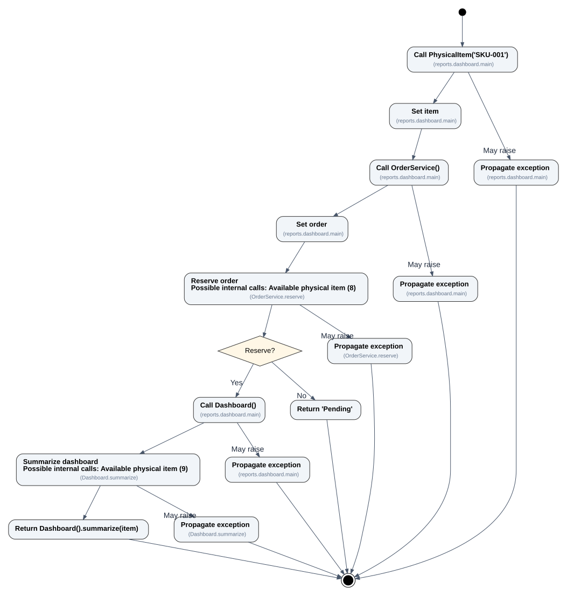

01 / ACTIVITY
Ver SVG ↗Diagrama de actividad
Las operaciones, las bifurcaciones y las rutas de excepción permanecen vinculadas al código fuente.


Análisis de control de flujo · Mermaid y Graphviz
PyFlowMap analiza código Python sin ejecutarlo. Genera diagramas de actividad y diagramas UML de clases y paquetes, con trazabilidad al código fuente y sin inventar relaciones.
Los tres ejemplos proceden del mismo proyecto Python de demostración y se han generado sin inferencia semántica.
Las operaciones, las bifurcaciones y las rutas de excepción permanecen vinculadas al código fuente.

Clases, atributos, operaciones, generalizaciones y dependencias justificadas por el análisis estático.

Paquetes Python declarados e imports del proyecto. Carpeta vectorial con el nombre integrado por defecto; notación UML clásica como alternativa.

Instala la versión de desarrollo desde GitHub, con sus dependencias declaradas. Graphviz permite obtener SVG y PNG. Los diagramas UML no necesitan claves ni contexto adicional del consumidor.
Los paquetes se generan localmente en la carpeta dist/ de cada proyecto y no se publican en PyPI. Consulta las instrucciones de instalación del repositorio.
# Disponible en main; Python 3.11+ y Graphviz para SVG/PNG.
git clone https://github.com/SergioGilBorras/PyFlowMap.git
cd PyFlowMap
python -m pip install -e .
# Clases UML
pyflowmap analyze ./project --diagram-type class --format all --renderer graphviz
# Paquetes: estilo modern por defecto
pyflowmap analyze ./project --diagram-type package --package-style modern --format all --renderer graphviz
# Para una representación de paquete estricta
pyflowmap analyze ./project --diagram-type package --package-style strict --format all --renderer graphvizSe inspecciona el AST de Python. No se importa ni ejecuta el proyecto analizado.
Los JSON conservan símbolos, ubicaciones y evidencia de las relaciones interpretadas.
Clases y paquetes expresan un subconjunto contrastable de UML 2.5.1. Lo que depende del entorno o de comportamientos dinámicos permanece sin resolver.
Nota sobre la notación: el estilo de paquetes strict usa la forma tradicional UML con pestaña; modern es una presentación gráfica alternativa, no una declaración de conformidad formal de su icono.